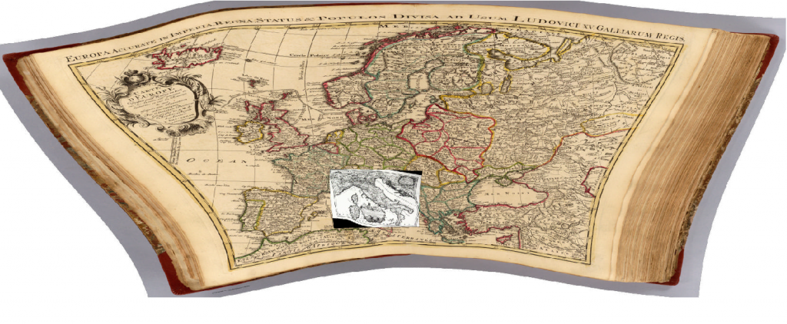
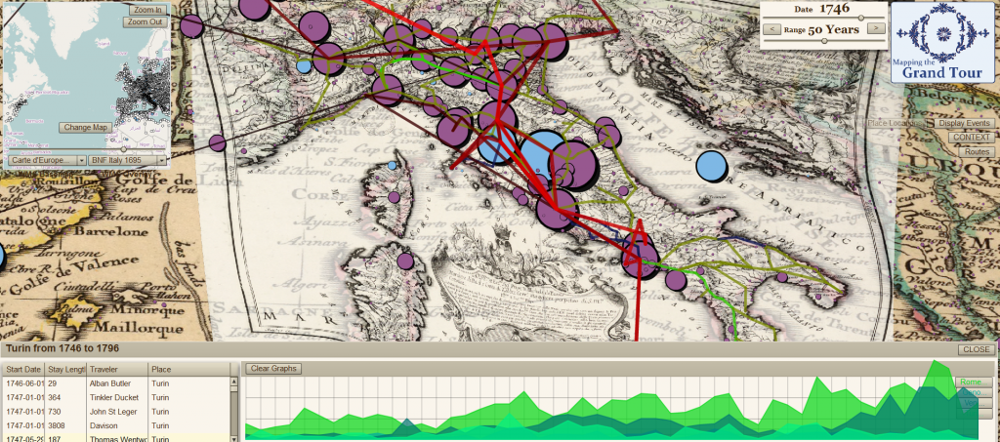

Edward Tufte referred to one form of visual junk as “ducks”, in reference to a house built like a giant duck, criticizing the superfluity of it with a quote from Robert Venturi that ends with the admonition:
It is all right to decorate construction but never construct decoration.
On that note, I’ve begun to struggle with the concept of historical map rectification1, and the noble ideals that push one to georectify and then make available–either within local applications or via WMS (Web Mapping Services)–beautiful historical maps that seem to have been run through funhouse mirrors, such as the two below:


A map of Italy c. 1695 from the Bibliotheque Nationale de France, overlaid on a map of Europe from the Rumsey Collection, c. 1743. Notice the irregularity of the latitudinal and longitudinal lines, indicating what modern geographers would refer to as a non-standard projection coupled with a lack of familiarity with the terrain.
The product of such work is so delightful to a variety of audiences that the pursuit of digitizing and georectifying historical maps is as concrete a “good” as the digitization and OCR of every book available. Just look at the Map of Yu (well, if you could find it) projected onto the modern, 3D globe of Google Earth and tell me that there isn’t a more true definition of the Digital Humanities!
There’s an unpleasant truth in the accuracy of such a claim if the effort expended on rectifying these maps is only for the purpose of decorating our historical research. The image below, is fundamentally useless from the perspective of historical research–it’s too cluttered and discombobulated, but it shows an enormous amount of information and effort all at once on one screen. The historical maps that sit below the network and point data are nothing but wallpaper. It’s a duck, purpose-built to demonstrate to people my carpentry skills, in which case it may not be a duck, because it is serving a purpose, but not all such products are so self-conscious:


The same maps from above, with the BNF map made semi-transparent, overlaid with postal routes of Italy c. 1790, the travels of Richard Colt Hoare and destination popularity in the latter half of the 18th century.
Rectification of historical maps, especially older historical maps that have problematic geography, is not necessarily construction of decoration, but the heuristic value of such maps needs to be examined. Tracing the borders of environmental or political bodies will have questionable returns given the distortions of many of these maps, and point locations, which can be triangulated to some degree of accuracy through many passes, may prove to be better discovered through textual search that associates the historical place with a modern place.
Identifying networks and topologies, such as the postal routes used in the analysis of the Grand Tour above, can be accomplished without any georectification, except (and here is the reason why the above maps are rectified) insofar as georectification allows for using Cartesian geography as an index, and therefore is practically useful from a sense of workflow. In other words, if I am identifying networks between cities, it is easier for me to catalog them on the map in which they exist rather than cataloging them in a spreadsheet and then associating those places with the georeferenced locations later (especially in the case of historical places, which have interesting placename issues with batch geocoding). As such,it is easier to overlay a set of locations onto the map and allow myself or other users to click on those locations in the order of the network rather than to write each of them down and then find x-y coordinates in a later step.
So, while there are good reasons to georectify historical maps, it should not, like OCR of historical texts, be considered an automatic step in any good archival process. In fact, it may be that, like OCR of historical texts, we should develop a way to OCR maps, and not for the purpose of automatic georectification but rather to catalog their features and the internal geography of the map itself. Such catalogs could be used to provide rough, on-the-fly rectification when needed (and likely this level of rectification the most useful for 200+ year old maps) for the purpose of lifting knowledge for use in historical GIS or otherwise. Presenting modern GIS data overlaid on a 300-year-old map does indeed impress audiences, and at times that may be a legitimate goal, but lifting data from old maps may be better served by rarely, if ever, rectifying them.
1 There’s a very different set of rules when it comes to more modern maps. Land use and demography can be more readily drawn from maps from the last century or so, and especially in the case of urban maps.